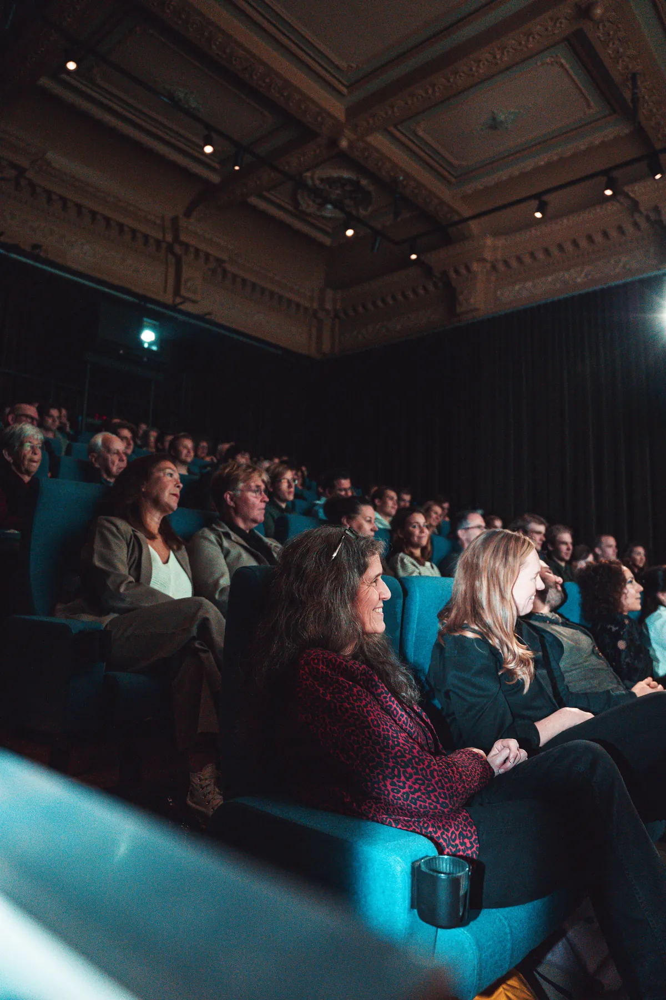
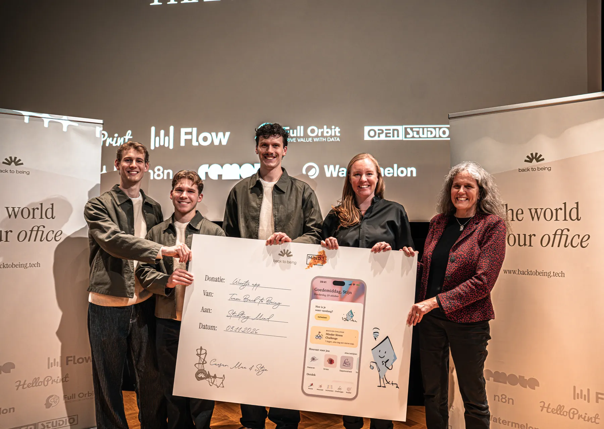
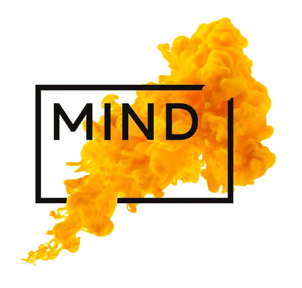
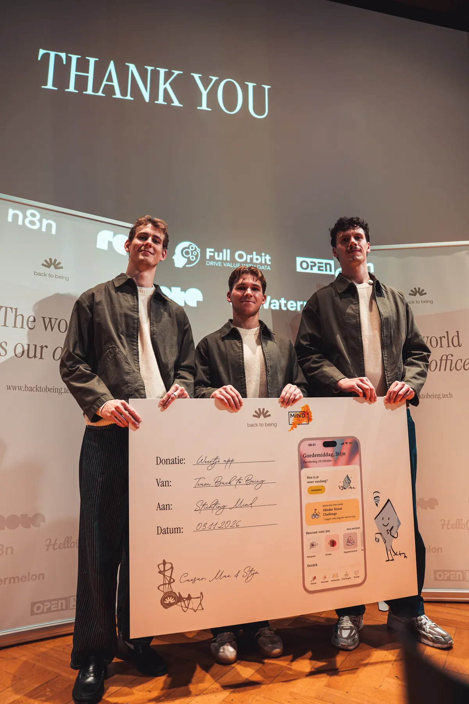
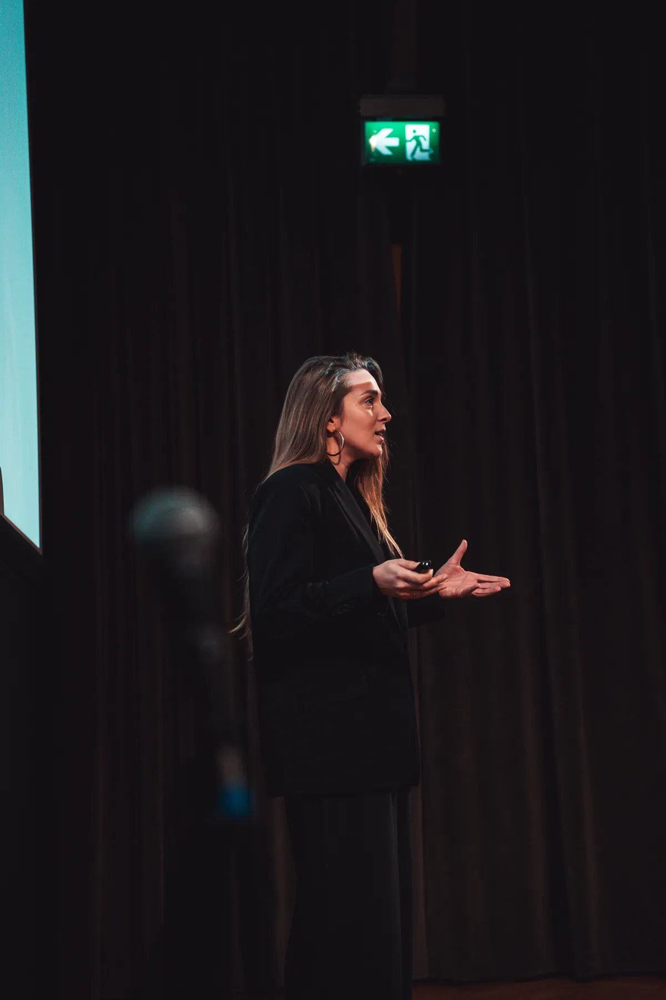
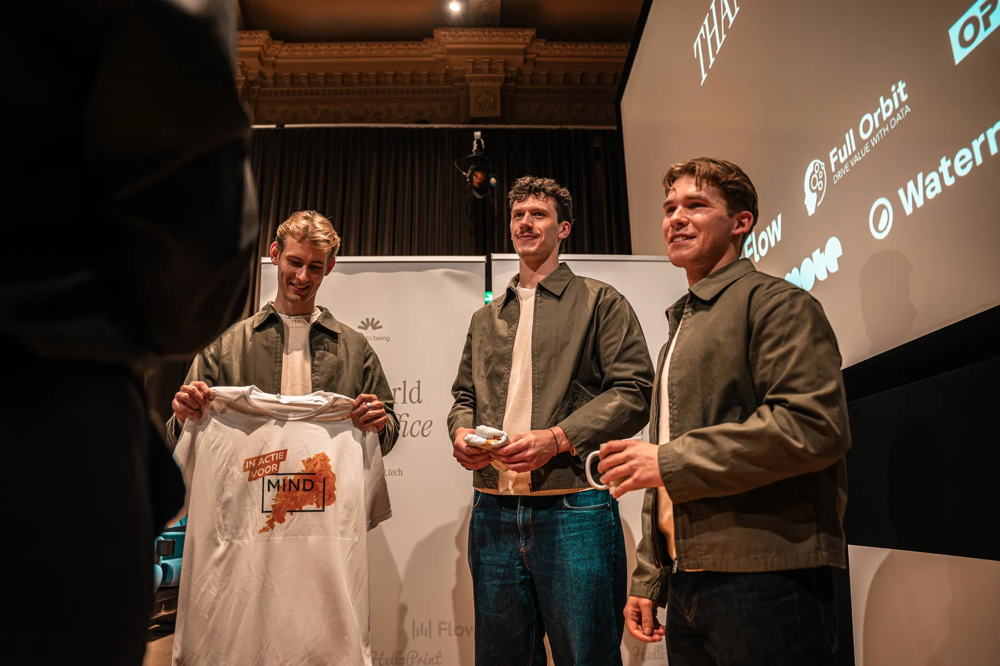
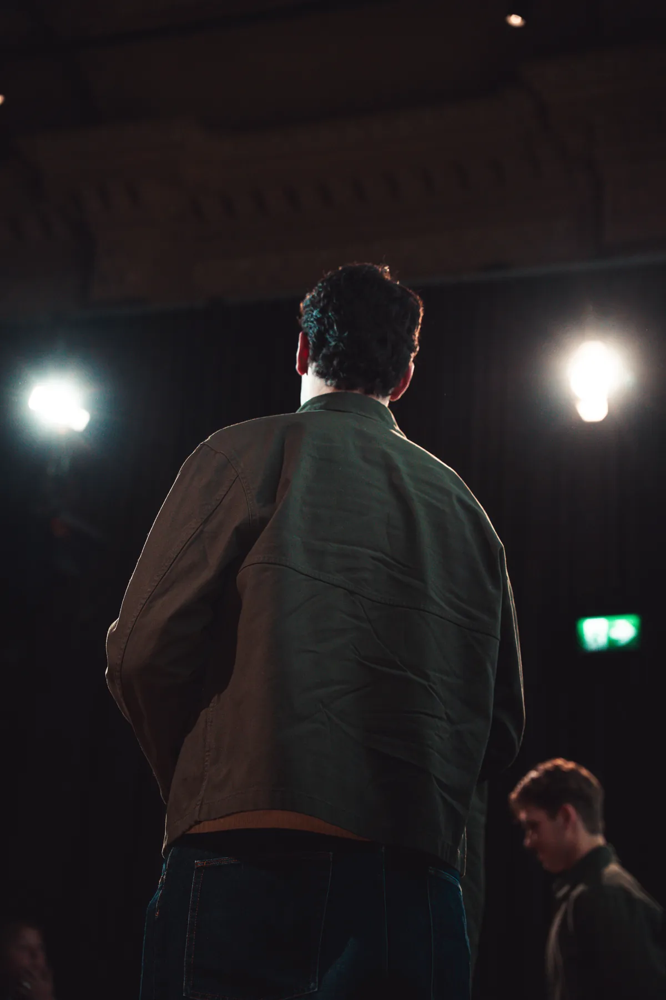
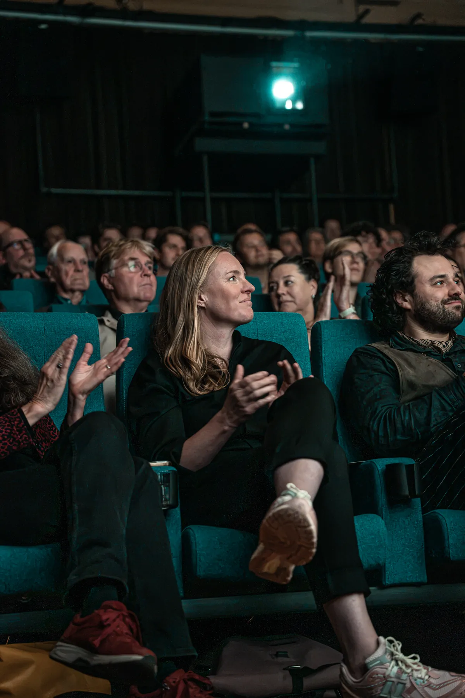
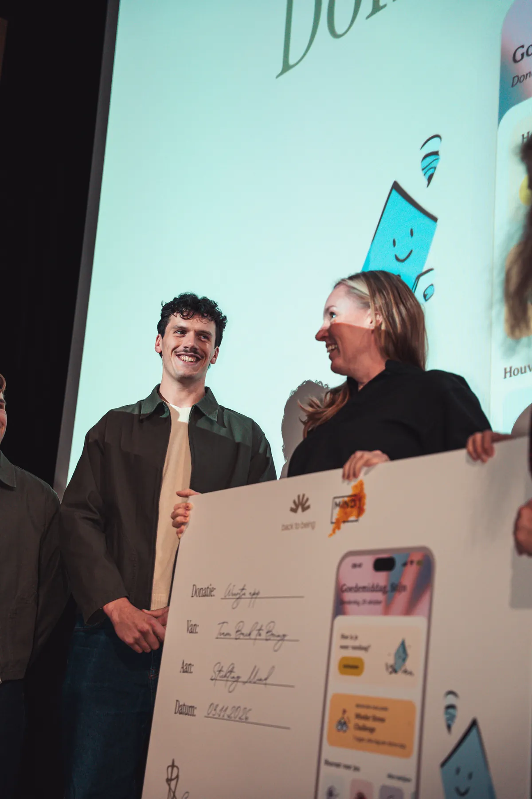
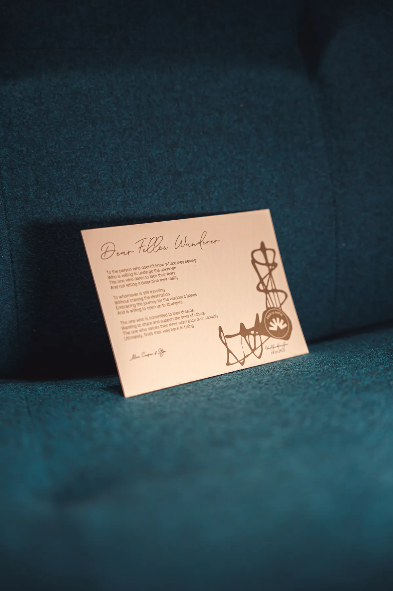

Back to Being ging in première.
Onlangs ging de documentaire die we zelf maakten tijdens het lopen in première in Het Vondelpark Paviljoen in Amsterdam.
Het werd een bijzondere avond waarin verbinding centraal stond. In zo’n 40 minuten namen we de hele zaal mee op de Camino: wat er nodig was om ons idee werkelijkheid te maken, hoe de elementen roet in het eten gooiden en hoe we daarmee omgingen.



De overdrachtDe app is nu van MIND.
Na de film hebben we Weertje, de app die we onderweg bouwden, kosteloos overgedragen aan stichting MIND. Dienke Bos, directeur-bestuurder, en Cisca Goedhart, manager Kennis, Innovatie en Onderzoek, namen hem namens MIND in ontvangst.
De avond in beeld.







Ons verhaal verder vertellen.
Met de documentaire willen we ons verhaal aan meer mensen vertellen, en zo mentale gezondheid makkelijker bespreekbaar maken.
Daarom onderzoeken we hoe we de film naar bioscopen, filmtheaters en organisaties kunnen brengen.
Neem contact op →- OrganisatiesOrganiseer een vertoning voor je team, je leden of je publiek.
- Bioscopen en filmtheatersLaat de film zien op het grote doek.
- Omroepen en streamingdienstenInteresse om de documentaire uit te zenden? We horen het graag.